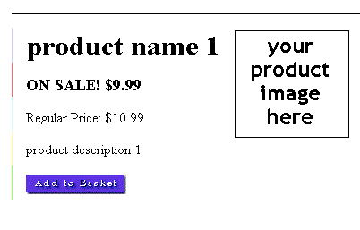
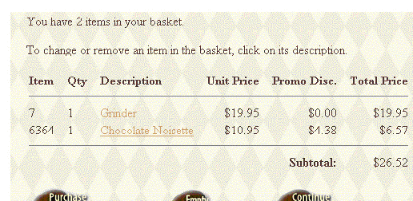
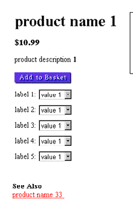
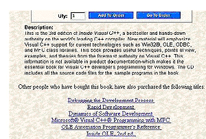
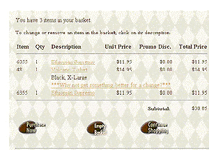
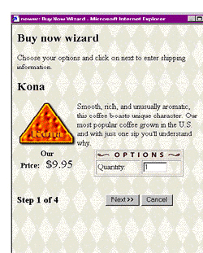
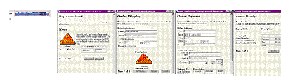
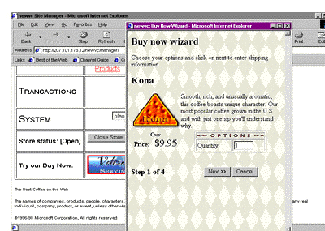
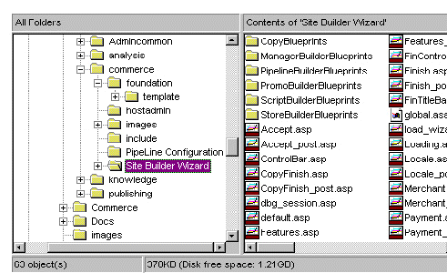
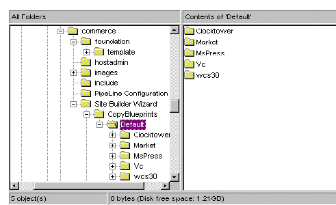

|
| ||
|
| ||
Alan Saldanha
SiteServer101.com
December 10, 1998
Contents
Introduction
What a Promotion Is
Using Commerce to Automate Promotions
Implementing the Buy Now Feature
Adding Buy Now to an Existing Site
Adding the Buy Now Templates to the Site Builder Wizard
Conclusion
About Alan Saldanha
If you run an electronic commerce (e-commerce) storefront, you generally have one thing in mind--sell, sell, sell. You want your customer to buy more expensive products from your store (which hopefully have better profit margins) and buy them more often. Most of all, you want your shoppers to be loyal to your storefront, and not visit your competitor who is just a click away.
In the real world, stores offer incentives and promotions to entice and keep customers. On the Web, the components and features that come with Microsoft® Site Server, Commerce Edition allow electronic storefronts to automate the process of offering incentives to shoppers. Incentives enable your store to:
In this article, after a ginger introduction to promotions, you will be introduced to promotional engines available with Commerce Edition. Following that, you will introduced to the Buy Now feature in Commerce that caters to impulse buying. Two methods of adding the Buy Now feature to your site are covered:
You are likely to find the latter approach more interesting, since it not only allows you to turn out sites using Buy Now in a couple of minutes, but will introduce you to how the templates are used by the Site Builder Wizard to develop the sites.
A promotion is an incentive used by merchants to attract new customers to a product and to reward loyal customers. As well, promotions serve to increase purchase and repurchase rates of the casual shopper. Promotions are an especially good way of getting shoppers to switch their brand or store, and to convert a onetime shopper into a loyal customer.
Commerce allows you to automate the process of offering incentives to shoppers, which entices them to buy, and buy more, from your store. Commerce provides the infrastructure to add the following types of promotions to your site:
Sale promotion: Substitutes a reduced price for the list price of an item. For example, during January, a product that lists for $10.99 is offered for $9.99.

Figure 1. Appearance of a sales promotion during the period the promotion is valid
Price promotion: Applies price discounts and special offers based on attributes of the shopper, or on the purchase of the same or other products in the same category. For example, in the Volcano Coffee sample site (shipped with Commerce), if the customer orders a coffee grinder, a discount of 40 percent is offered on any flavored coffee.

Figure 2. The discount is detailed in the Promo Disc. column
Cross-sell promotion: Encourages the customer to consider purchasing a related product by following a link. For example, in the site loaded with data in the Site Builder Wizard, product name 33 is the cross-sell promotion for product name 1.

Figure 3. Product name 33 is cross-sold when product name 1 is viewed
Intelligent cross-sell: Suggests other items that a customer might be interested in by correlating items that the customer has ordered with a database of items that other shoppers have ordered. The Microsoft Press sample site (shipped with Commerce) uses this type of promotion on its Product.asp page. For example, when the user views the page for the book Inside Visual C++, other titles are offered, as shown in Figure 4.

Figure 4. Purchases are suggested based on the buying patterns of other shoppers.
Upsell promotion: Suggests that the customer buy a more expensive product instead of one in the shopping basket. If the customer agrees, the new item replaces the item in the basket. For example, in Volcano Coffee, if the customer orders a Volcano T-shirt, the basket.asp, which is responsible for displaying the contents in the shopping cart, suggests "Why not get something better for a change?", and links the customer to a more expensive product.

Figure 5. When the Volcano T-shirt is added to the shopping cart, a link to a more expensive product comes up.
Buy Now: Caters to the impulse buyer. This implementation is excellent in cases where you may be advertising your product using ad banners, and want the purchase process to be executed as quickly as possible for the shopper, without distracting them with additional products and links found in the main section of your site.

Figure 6. Impulse purchasing with Buy Now
Sample implementations of different types of promotions come with Commerce. The Volcano Coffee (http://yourservername/vc30) sample site is a good example of the Buy Now feature, price promotions, up-sell promotions, and cross-sell promotions. The Microsoft Press (http://yourservername/mspress30) sample site has a good example of intelligent cross-selling.
However, the implementations of some features at the sample sites are developed specifically for the sample and need to be adapted to the variations of your store. This article details the steps to take to add the Buy Now feature to your Web site if it's not based on Volcano Coffee. You will be shown two approaches to implementing the Buy Now feature at your store.
The Buy Now feature of Commerce encourages shoppers to make impulse purchases. It allows a shopper to view an item directly from another Web site, through an ad banner or link. The shopper has the opportunity to make the purchase without having to navigate through your Web site.
Buy Now allows you to embed product information and order forms inline within most any context--such as an online ad banner--allowing businesses to promote and sell products at sites where the link or ad originates.

Figure 7. Buy Now enables purchasing in four easy steps
By incorporating Microsoft JScript® within the ad banner or link, the product can be displayed and sold from a pop-up window.

Figure 8. The shopper can make the complete purchase without leaving the host site.
There are a couple of approaches to adding Buy Now to your site, depending upon the stage you are at in the development of your site, and whether you used the Site Builder Wizard to develop your site in the first place.
If you have already created your site using the Site Builder Wizard, use the steps outlined in the section "Adding Buy Now To An Existing Site."
If you would like to add the Buy Now feature to a site as it's being developed using the Site Builder Wizard, see the section "Adding The Buy Now Templates To The Site Builder Wizard." This will take you through the steps to add the template files to your system.
In this section, the steps that you would need to take to manually add the Buy Now feature are outlined. Note that a number of the steps may not apply directly to your application (for example, your site may not use dept_id and pf_id to display product information), and some modifications will need to be made to meet your current application needs.
Developers should keep the following points in mind when adding Buy Now to an existing site.
To create the directory
Create a new directory called BuyNow under the root directory of your store. In most cases that will be c:\inetpub\wwwroot\sitename, where sitename is the name of your store.
To make a copy of the needed files
Copy the following files from your existing site into the BuyNow directory. These files correspond to files that would be created by the Site Builder Wizard, and which you may have modified to suit your needs.
To change when the shopper ID is created
REM -- Manually create shopper id mscsShopperID = mscsPage.GetShopperId
REM -- Create the shopper id for the buy now shopper
if IsNull(mscsShopperID) then
mscsShopperID = MSCSShopperManager.CreateShopperId()
mscsPage.PutShopperId(mscsShopperID)
end if
To change the steps involved before and after the plan.pcf (the plan pipeline configuration file) is called
function UtilRunPlan()
REM Create a storage object for the order forms
set mscsOrderFormStorage = UtilGetOrderFormStorage()
REM Get the orderform
set mscsOrderForm = UtilGetOrderForm(MSCSOrderFormStorage, created)
REM Get the basic pipe context
Set mscsPipeContext = UtilGetPipeContext()
REM Create and run the pipe
errorLevel = UtilRunPipe("plan.pcf", mscsOrderForm, mscsPipeContext)
REM Save the order form in case running the pipe made changes to the order form
if created then
call mscsOrderFormStorage.InsertData(null, mscsOrderForm)
else
call mscsOrderFormStorage.CommitData(null, mscsOrderForm)
end if
Set UtilRunPlan = mscsOrderForm
end function
To change the way the order form is stored
function UtilPutOrderForm(byRef orderFormStorage, byRef orderForm, byRef created) if created = 0 then Call orderFormStorage.CommitData(NULL, orderForm) else Call orderFormStorage.InsertData(NULL, orderForm) end if end function
To change the look and feel of the product display
To change the buttons in product.asp
<SCRIPT LANGUAGE="JScript">
function submitTheForm()
{
document.prodinfo.submit();
}
</SCRIPT>
<FORM METHOD=POST NAME=prodinfo
ACTION="<%= pageSURL("buynow/xt_orderform_additem.asp") %>">
<FORM> <INPUT TYPE=BUTTON VALUE="Next >>" onClick="submitTheForm()"> <INPUT TYPE=BUTTON VALUE="Cancel" onClick="self.close()" > </FORM>
To change the redirection, after the Next button is clicked at the product view page
'call Response.Redirect("basket.asp?" & mscsPage.URLShopperArgs())
call Response.Redirect(mscsPage.SURL( "buynow/shipping.asp", _
"pf_id", Request("pf_id"), _
"dept_id", Request("dept_id")))
To add the buttons to the shipping information page
<SCRIPT LANGUAGE="Javascript">
function submitTheForm()
{
document.shipinfo.submit();
}
</SCRIPT>
<FORM METHOD="POST" name="shipinfo"
ACTION="<%= pageSURL("buynow/xt_orderform_prepare.asp") %>">
strDownlevelURL = pageSURL("shipping.asp")
strDownlevelURL = mscsPage.SURL("buynow/shipping.asp", _
"pf_id", Request("pf_id"), _
"dept_id", Request("dept_id"), _
"qty", mscsOrderForm.quantity)
<TR> <TD></TD> <TD ALIGN="CENTER"> <INPUT TYPE="Image" VALUE="Total" src="<%= "/" & siteRoot %>/manager/MSCS_Images/buttons/btntotal1.gif" WIDTH="116" HEIGHT="25" BORDER="0" ALT="Total"> </TD> <TD ALIGN="CENTER" COLSPAN="2"> <INPUT TYPE="reset" VALUE="Reset"> </TD> </TR>
<FORM METHOD="POST" ACTION="<% = mscsPage.URL("buynow/product.asp","pf_id",
_ Request("pf_id"), "dept_id", Request("dept_id"),"qty",(mscsOrderForm.quantity)) %>" >
<INPUT TYPE=SUBMIT VALUE="<< Previous" id=SUBMIT1 name=SUBMIT1>
<INPUT TYPE=BUTTON VALUE="Next >>" onClick="submitTheForm()" id=BUTTON1
name=BUTTON1>
<INPUT TYPE=BUTTON VALUE="Cancel" onClick="self.close()" id=BUTTON2 name=BUTTON2>
</FORM>
To add the buttons to the payment information page
<SCRIPT LANGUAGE="Javascript">
function submitTheForm()
{
document.payinfo.submit();
}
</SCRIPT>
<FORM METHOD=POST name="payinfo" ACTION="<%= pageSURL("buynow/xt_orderform_purchase.asp") %>">
<FORM METHOD="POST" ACTION="<%=mscsPage.SURL("buynow/shipping.asp","pf_id",
_ Request("pf_id"), "dept_id", Request("dept_id"), "use_form", Request("use_form")) %>">
<INPUT TYPE=SUBMIT VALUE="<< Previous" >
<INPUT TYPE=BUTTON VALUE="Next >>" onClick="submitTheForm()">
<INPUT TYPE=BUTTON VALUE="Cancel" onClick="self.close()" >
</FORM>
To make changes in how the purchase is processed
function OrderFormPurchase(byRef errorList)
OrderFormPurchase = null
REM Create a Storage object for the shopper information
' Set mscsShopperStorage = UtilGetShopperStorage()
REM Get the shopper from the shopper storage
' Set mscsShopper = UtilGetShopper(mscsShopperStorage)
REM If the shopper is null, there is no sense in us going on
' if IsNull(mscsShopper) then
' errorList.Add("Invalid shopper.")
' exit Function
' end if
set mscsPipeContext.Shopper = mscsShopper
To modify how the confirmation screen is generated
<A href="<% = baseURL("buynow/bnreceipt.asp") & mscsPage.URLShopperArgs("order_id",
_ Request("order_id")) %>"><STRONG><% = order_id %></STRONG></A>.
To modify how the receipt is displayed
<FORM> <INPUT TYPE=BUTTON VALUE="Finished" ONCLICK="window.close()" > </FORM>
To add a link to simulate Buy Now
<SCRIPT>
<!--
function popUpWindow() {
BuyNowWin = window.open(
"buynow/product.asp?dept_id=1&pf_id=001",
"BuyNow","width=400,height=525,scrollbars=yes");
}
// -->
</SCRIPT>
<A href="javascript:popupwindow()">buynow Test</a>
This section discusses adding the Buy Now templates to the Site Builder Wizard. This involves modifying an ASP file that is part of the Site Builder Wizard, as well as making changes that affect the Site Foundation Wizard.
Before you get started making all these changes, make sure that the changes are being made on a server used for development rather than production, and that you have created a back-up of files in c:\Microsoft Site Server\SiteServer\Admin\commerce\Site Builder Wizard\StoreBuilderBluePrints.
Since this section involves the creation of templates used by the wizard, here is a brief overview of how it works. The Site Builder Wizard works with the ASP files located in the directory c:\Microsoft Site Server\SiteServer\Admin\commerce\Site Builder Wizard\, indicated in the figure below. As is the case with the Site Foundation Wizard, each screen of the wizard is developed by an ASP script and serves the purpose of collecting information from the user about the store being created.

Figure 9. Directory location of the Site Builder Wizard ASP files
Once all the information is collected, the ASP file finish_post.asp uses a number of templates to develop the files for the site. The template files used by the Site Builder Wizard are located in the subdirectories under c:\Microsoft Site Server\SiteServer\Admin\commerce\Site Builder Wizard\. The template files are interpreted based on the file extension. Files have an extension of .ast for ASP files, .sqt for script files used with the database, and .pct for files related to the Pipeline configuration files.
The templates for the sample sites are kept in c:\Microsoft Site Server\SiteServer\Admin\commerce\Site Builder Wizard\CopyBluePrint\Default, as indicated by the figure below. This is the directory in which you could keep copies of other Commerce sites (Volcano, Microsoft press, and so on) that use the Site Builder Wizard.

Figure 10. Directory that contains the blueprints for sample sites
The templates that come with Commerce have not been modified to implement Buy Now; there are no templates that allow a person to add the Buy Now feature again and again. Buy Now is implemented as part of a sample site, Volcano in specific. However, you would have to copy the templates that come with Volcano, and then modify the copies to suit your site.
Included here is a ZIP file with templates that are modified for the Buy Now feature. They allow the user to add Buy Now to any site using the custom option of the Site Builder Wizard.
 Click here to download the templates (zipped, 30 KB).
Click here to download the templates (zipped, 30 KB).
In order to use the templates in the ZIP file, do the following:
To create a BuyNow directory for your site while running the Site Foundation Wizard
Create a directory called BuyNow in c:\Microsoft Site Server\SiteServer\Admin\commerce\foundation\template.
To add the templates
Unzip the template files with extension ast, and place them into the directory c:\Microsoft Site Server\SiteServer\Admin\commerce\Site Builder Wizard\StoreBuilderBluePrints. The following files are added:
The template files added are similar to those in the directory c:\Microsoft Site Server\SiteServer\Admin\commerce\Site Builder Wizard\StoreBuilderBluePrints. They are preprended with "bn", so bnxt_orderfrom_additem.asp is based on xt_orderfrom_additem.asp
To have the templates used by the Site Builder Wizard
Add the following lines to the function. This code copies the template files into the BuyNow directory of your site that was created using the Site Foundation Wizard.
var BuyNow = "BuyNow\\"; shopFileDict.bnproduct = BuyNow; shopFileDict.bnxt_orderform_additem = BuyNow; shopFileDict.bni_error = BuyNow; shopFileDict.bni_shop = BuyNow; shopFileDict.bni_util = BuyNow; shopFileDict.bni_mswallet = BuyNow; shopFileDict.bni_selector = BuyNow; shopFileDict.bni_selector = BuyNow; shopFileDict.bni_selector = BuyNow; shopFileDict.bnpayment = BuyNow; shopFileDict.bnreceipt = BuyNow; shopFileDict.bnconfirmed = BuyNow; shopFileDict.bnshipping = BuyNow; shopFileDict.bnxt_orderform_prepare = BuyNow; shopFileDict.bnxt_orderform_purchase = BuyNow;
The lines added to the function are highlighted in the listing below.
function GetShopFileDict()
{
var shopFileDict = Server.CreateObject("Commerce.Dictionary");
var root = "";
var closed = "closed\\";
var BuyNow = "BuyNow\\";
shopFileDict.bnproduct = BuyNow;
shopFileDict.bnxt_orderform_additem = BuyNow;
shopFileDict.bni_error = BuyNow;
shopFileDict.bni_shop = BuyNow;
shopFileDict.bni_util = BuyNow;
shopFileDict.bni_mswallet = BuyNow;
shopFileDict.bni_selector = BuyNow;
shopFileDict.bni_selector = BuyNow;
shopFileDict.bni_selector = BuyNow;
shopFileDict.bnpayment = BuyNow;
shopFileDict.bnreceipt = BuyNow;
shopFileDict.bnconfirmed = BuyNow;
shopFileDict.bnshipping = BuyNow;
shopFileDict.bnxt_orderform_prepare = BuyNow;
shopFileDict.bnxt_orderform_purchase = BuyNow;
shopFileDict.about = root;
shopFileDict.basket = root;
shopFileDict.closed = closed;
shopFileDict.confirmed = root;
shopFileDict.dept = root;
if (g_store.product.find_enabled) {
shopFileDict.find = root;
}
shopFileDict.i_error = root;
shopFileDict.i_footer = root;
shopFileDict.i_header = root;
shopFileDict.i_mswallet = root;
shopFileDict.i_selector = root;
shopFileDict.i_shop = root;
shopFileDict.i_util = root;
if (g_store.product_groups.dept.level == "multiple") {
shopFileDict.listing = root;
}
shopFileDict.payment = root;
shopFileDict.product = root;
if (g_store.accept_orderhist_enabled) {
shopFileDict.receipt = root;
shopFileDict.receipts = root;
}
shopFileDict.shipping = root
if (!isGuestReg) {
shopFileDict.shopper_lookup = root;
shopFileDict.shopper_new = root;
shopFileDict.shopper_update = root;
}
shopFileDict.xt_orderform_additem = root;
shopFileDict.xt_orderform_clearitems = root;
shopFileDict.xt_orderform_delitem = root;
shopFileDict.xt_orderform_editquantities = root;
shopFileDict.xt_orderform_prepare = root;
shopFileDict.xt_orderform_purchase = root;
return shopFileDict;
}
To try it out
http://yourservername/sitename/buynow/bnproduct.asp?dept_id=1&pf_id=001
The Buy Now feature of Microsoft Site Server, Commerce Edition is a great tool for adding revenue to your online store. An important by-product of this article is that it reveals the tremendous potential that template creation and modification have for developing re-usable Web applications--after all, once the templates have been created and tested, you can turn out customized versions of the same core application.
Alan provides consulting and training in ASP and Site Server Commerce. He was featured in a Microsoft video for his use of COM on the Campbell's Soup Web site, and runs a site devoted to Site Server at http://www.siteserver101.com  . He can be reached alan@siteserver101.com
. He can be reached alan@siteserver101.com 
Did you find this material useful? Gripes? Compliments? Suggestions for other articles? Write us!
© 1999 Microsoft Corporation. All rights reserved. Terms of use.